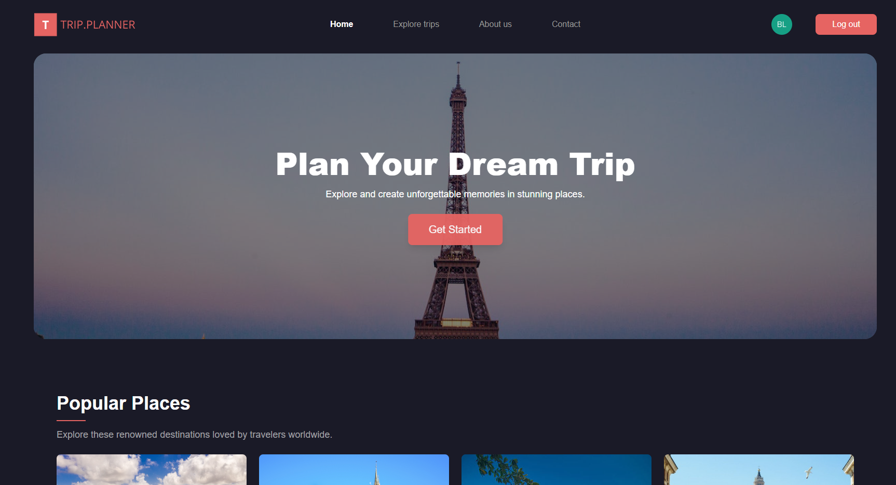
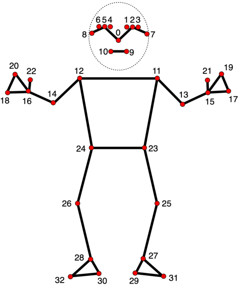
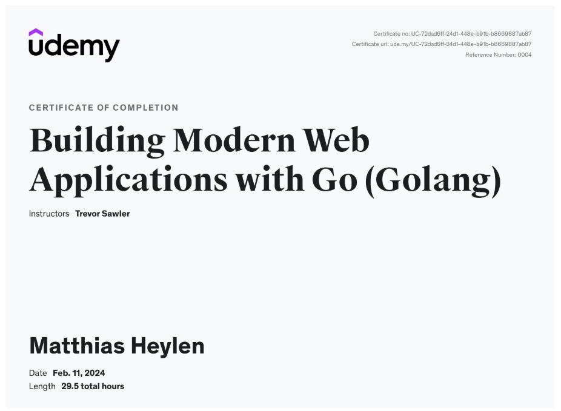
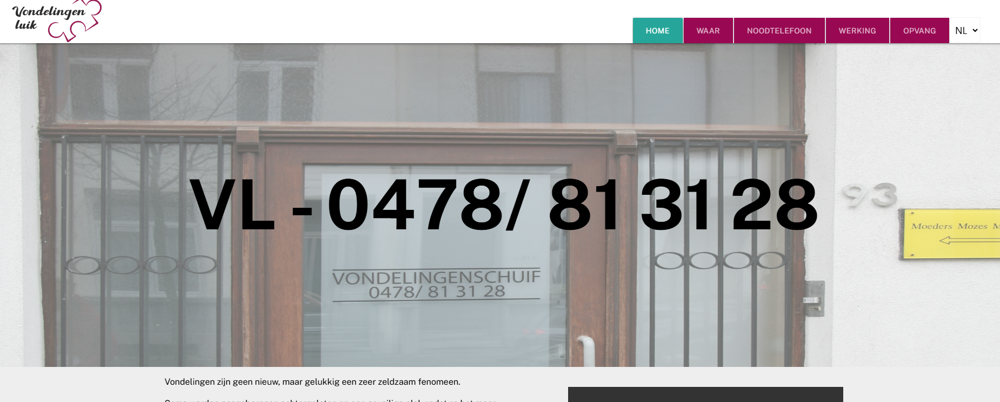

portfolio

.png)



Application Developer
This portfolio website was created to showcase my work and accomplishments as a complement to my bachelor thesis. It provides a comprehensive overview of my three years of experience at the IT Factory. Scroll down to explore my journey in detail!
I enjoy working on projects that challenge me to think critically and grow my technical skills. Whether it’s designing sleek interfaces or building the systems that power them, I’m eager to learn and improve with every step. Outside of development, I’m passionate about skiing, immersing myself in movies and series, listening to music, and exploring the world of gaming and game development. These interests fuel my creativity and keep me motivated to pursue excellence in everything I do.
0470 01 85 55
matthiasheylen1@gmail.com
During my 13-week internship at Telenet, I had the opportunity to dive deep into various aspects of telecom and software development, gaining hands-on experience in a professional environment. One of the key areas I focused on was understanding the basics of telecommunications, which provided me with a solid foundation in how networks and services operate. Alongside this, I got introduced to AWS, learning about cloud services and how to effectively use AWS tools for deployment and scaling.
A significant part of my internship involved working on automation testing. I learned how to create automated tests using Cucumber, which helped me improve the efficiency of testing and made the process much more streamlined. I also became familiar with tools like SonarQube, where I worked on analyzing code coverage, removing bugs, and cleaning up code to ensure better maintainability. This experience gave me a clearer understanding of the importance of maintaining high-quality code, something I’ve been able to carry forward into my learning.
In addition to technical skills, I developed my knowledge in working with different web frameworks. I had the chance to explore React and Vue, both of which gave me a broader perspective on front-end development and the importance of building responsive and scalable applications. These frameworks introduced me to new ways of thinking about user interfaces and the value of component-based development.
Collaboration and communication were also key aspects of my internship. I was involved in presenting my work to colleagues, giving me the chance to develop my presentation skills and clearly articulate technical concepts to others. The team operated using agile methodologies, with sprints lasting two weeks, regular retrospectives after each sprint, and weekly reviews. I participated actively in these agile rituals, which helped me understand how iterative development works in practice and how teams continuously improve their processes. Additionally, daily stand-ups kept the team aligned and focused on our objectives.
.png)